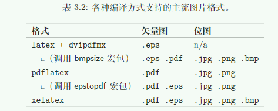
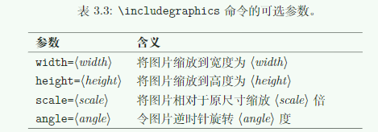

<!DOCTYPE html>


<html lang="zh-CN">


<head>
  <meta charset="utf-8" />
    
  <meta name="viewport" content="width=device-width, initial-scale=1, maximum-scale=1" />
  <title>
    一份（不太）简短的LaTex介绍学习笔记 |  VincereZhou&#39;s blog
  </title>
  <meta name="generator" content="hexo-theme-ayer">
  
  <link rel="shortcut icon" href="/images/mojie.jpg" />
  
  
<link rel="stylesheet" href="/dist/main.css">

  <link rel="stylesheet" href="https://cdn.jsdelivr.net/gh/Shen-Yu/cdn/css/remixicon.min.css">
  
<link rel="stylesheet" href="/css/custom.css">

  
  <script src="https://cdn.jsdelivr.net/npm/pace-js@1.0.2/pace.min.js"></script>
  
  

  

<link rel="alternate" href="/atom.xml" title="VincereZhou's blog" type="application/atom+xml">
</head>

</html>

<body>
  <div id="app">
    
      
    <main class="content on">
      <section class="outer">
  <article
  id="post-一份（不太）简短的LaTex介绍学习笔记"
  class="article article-type-post"
  itemscope
  itemprop="blogPost"
  data-scroll-reveal
>
  <div class="article-inner">
    
    <header class="article-header">
       
<h1 class="article-title sea-center" style="border-left:0" itemprop="name">
  一份（不太）简短的LaTex介绍学习笔记
</h1>
 

    </header>
     
    <div class="article-meta">
      <a href="/2019/09/07/%E4%B8%80%E4%BB%BD%EF%BC%88%E4%B8%8D%E5%A4%AA%EF%BC%89%E7%AE%80%E7%9F%AD%E7%9A%84LaTex%E4%BB%8B%E7%BB%8D%E5%AD%A6%E4%B9%A0%E7%AC%94%E8%AE%B0/" class="article-date">
  <time datetime="2019-09-07T13:43:46.000Z" itemprop="datePublished">2019-09-07</time>
</a>   
<div class="word_count">
    <span class="post-time">
        <span class="post-meta-item-icon">
            <i class="ri-quill-pen-line"></i>
            <span class="post-meta-item-text"> 字数统计:</span>
            <span class="post-count">2k</span>
        </span>
    </span>

    <span class="post-time">
        &nbsp; | &nbsp;
        <span class="post-meta-item-icon">
            <i class="ri-book-open-line"></i>
            <span class="post-meta-item-text"> 阅读时长≈</span>
            <span class="post-count">7 分钟</span>
        </span>
    </span>
</div>
 
    </div>
      
    <div class="tocbot"></div>


  
    <div class="article-entry" itemprop="articleBody">
       
  <h1 id="第一章-LaTeX-须知"><a href="#第一章-LaTeX-须知" class="headerlink" title="第一章 LaTeX 须知"></a>第一章 LaTeX 须知</h1><p>本书的别名叫做106分钟了解LaTeX，但是要看完根本不止106分钟，更别说理解了。暂时先看到第四章。</p>
<h3 id="Tex"><a href="#Tex" class="headerlink" title="Tex"></a>Tex</h3><blockquote>
<p>TEX是高德纳(Donald E.Knuth)开发的、以排版文字和数学公式为目的的一个计算机软件。高德纳从1977年开始开发TEX，以发掘当时开始用于出版工业的数字印刷设备的潜力。正在编写著作《计算机程序设计艺术》的高德纳，意图扭转排版质量每况愈下的状况，以免影响他的出书。TEX排版引擎发布于1982年，在1989年又加以改进以更好地支持8-bit字符和多语言排版。TEX以其卓越的稳定性、跨平台、几乎没有Bug而著称。TEX的版本号不断趋近于π，当前为3.141592653</p>
</blockquote>
<h3 id="LaTex"><a href="#LaTex" class="headerlink" title="LaTex"></a>LaTex</h3><blockquote>
<p>LATEX为TEX基础上的一套格式，令作者能够使用预定义的专业格式以较高质量排版和印刷他们的作品。LATEX的最初开发者为Leslie Lamport博士。LATEX使用TEX程序作为自己的排版引擎。当前LATEX由LATEX3工作组1维护。</p>
</blockquote>
<h3 id="引擎、格式和编译命令"><a href="#引擎、格式和编译命令" class="headerlink" title="引擎、格式和编译命令"></a>引擎、格式和编译命令</h3><ul>
<li><strong>引擎</strong>     是编译源代码并生成文档的程序，如pdfTeX，XeTeX等。有时也称为编译器。</li>
<li><strong>格式</strong>    是定义了一组命令的代码集，最广泛应用的一个格式就是latex，另外，还有一个简版的plain tex</li>
<li><strong>编译命令</strong> 是实际调用的，结合了引擎和格式的命令，如xelatex和pdflatex。</li>
</ul>
<h3 id="latex用到的文件"><a href="#latex用到的文件" class="headerlink" title="latex用到的文件"></a>latex用到的文件</h3><ul>
<li><strong>.sty</strong> 宏包文件</li>
<li><strong>.cls</strong> 文档类文件</li>
<li><strong>.bib</strong> 参考文献数据库文件</li>
<li><strong>.bst</strong> 参考文献格式模板</li>
</ul>
<h3 id="latex编译中生成的文件"><a href="#latex编译中生成的文件" class="headerlink" title="latex编译中生成的文件"></a>latex编译中生成的文件</h3><ul>
<li><strong>.log</strong> 日志</li>
<li><strong>.aux</strong> 主辅助文件，记录交叉引用、目录和参考文献的引用等。</li>
<li><strong>.toc</strong> 目录记录文件</li>
<li><strong>.lof</strong> 图片目录记录文件</li>
<li><strong>.lotLATEX</strong> 生成的表格目录记录文件。</li>
<li>.bbl  BIBTEX生成的参考文献记录文件。</li>
<li>.blg  BIBTEX生成的日志文件。</li>
<li>.idx  LATEX生成的供makeindex处理的索引记录文件。</li>
<li>.ind  makeindex 处理.idx生成的用于排版的格式化索引文件。</li>
<li>.ilg  makeindex生成的日志文件。</li>
<li>.out  hyperref宏包生成的PDF书签记录文件。</li>
</ul>
<h3 id="include-与-input"><a href="#include-与-input" class="headerlink" title="\include 与 \input"></a>\include 与 \input</h3><ul>
<li>\include{ <em>filename</em> }  插入其他文件（不在同一目录需加路径），<strong>会另起一页</strong>。</li>
<li>\input{ <em>filename</em>} 一样，但是不会另起一页。</li>
</ul>
<h1 id="用LaTeX-排版文字"><a href="#用LaTeX-排版文字" class="headerlink" title="用LaTeX 排版文字"></a>用LaTeX 排版文字</h1><p>作者对排版中文文档的建议是，使用ctex文档类型、源代码保存为<strong>UTF-8</strong>编码、编译时使用<strong>xelatex</strong>命令</p>
<h3 id="字符编码"><a href="#字符编码" class="headerlink" title="字符编码"></a>字符编码</h3><p>latex命令和pdflatex命令下，可以使用<strong>inputenc</strong>宏包支持UTF-8编码：</p>
<figure class="highlight latex"><table><tr><td class="gutter"><pre><span class="line">1</span><br></pre></td><td class="code"><pre><span class="line"><span class="keyword">\usepackage</span>[utf8]&#123;inputenc&#125;</span><br></pre></td></tr></table></figure>
<p>xelatex和lualatex命令原生支持UTF-8编码。</p>
<h3 id="排版中文"><a href="#排版中文" class="headerlink" title="排版中文"></a>排版中文</h3><p>ctex 文档包括ctexart 、ctexrep、ctexbook，是目前最新的排版中文的方式（老的我不太想知道了）。</p>
<h3 id="空格"><a href="#空格" class="headerlink" title="空格"></a>空格</h3><ul>
<li>多个连续空格或tab键均视为一个空格。</li>
<li>每行开头的空格忽略不计、</li>
<li><strong>行末的回车</strong>视为一个空格</li>
</ul>
<h3 id="分段"><a href="#分段" class="headerlink" title="分段"></a>分段</h3><ul>
<li>连续<strong>两个回车</strong>，也就是空一行，会分段。</li>
<li>多个空行仍视为一个空行</li>
<li><strong>\par</strong>命名分段</li>
</ul>
<h3 id="注释"><a href="#注释" class="headerlink" title="注释"></a>注释</h3><ul>
<li><strong>%</strong></li>
</ul>
<h3 id="特殊字符"><a href="#特殊字符" class="headerlink" title="特殊字符"></a>特殊字符</h3><p>以下字符具有特殊用途，如需直接输入这些字符，需使用 *<em>*</em> 转义<br># $ % &amp; { } _ ^ ~ \</p>
<p>注： \为手动换行，因此输入反斜线为<strong>\textbackslash</strong></p>
<h3 id="标点符号"><a href="#标点符号" class="headerlink" title="标点符号"></a>标点符号</h3><ul>
<li>中文标点符号直接输入即可</li>
<li>英文双引号输入<strong>两个单引号</strong></li>
<li>连字符<ul>
<li>单个连字符**-**就是自身</li>
<li>两个连字符**–**连接数字表示范围</li>
<li>三个连字符**—**作为破折号—使用</li>
</ul>
</li>
<li>省略号 <strong>\ldots</strong> 和 <strong>\dots</strong> 表示输入三个点。</li>
<li>波浪号 <strong>-</strong> <strong>\sim</strong></li>
</ul>
<h3 id="文字强调"><a href="#文字强调" class="headerlink" title="文字强调"></a>文字强调</h3><ul>
<li>\underline{} 下划线</li>
<li>\emph{}        斜体</li>
</ul>
<h3 id="断行"><a href="#断行" class="headerlink" title="断行"></a>断行</h3><ul>
<li>*<em>\*</em> 进行断行。</li>
<li>用**-**插入不会断行的空格（高德纳称之为tie），常用于英文人名、图表名称等。</li>
</ul>
<h3 id="断页"><a href="#断页" class="headerlink" title="断页"></a>断页</h3><ul>
<li><strong>\newpage</strong>  <strong>\clearpage</strong></li>
</ul>
<h1 id="文档元素"><a href="#文档元素" class="headerlink" title="文档元素"></a>文档元素</h1><h3 id="章节题目"><a href="#章节题目" class="headerlink" title="章节题目"></a>章节题目</h3><ul>
<li>\chapter{} <strong>只在 book 和 report 文档类有定义</strong></li>
<li>\section{}  \subsection{} \subsubsection{} \paragraph{} \subparagraph{}</li>
<li>命令变体<ul>
<li>带可选参数的变体：\section[short title]{title}<br>标题使用title 参数，在目录和页眉页脚中使用short title参数</li>
<li>带星号的变体：\section*{title}<br>标题不带编号，也不生成目录项和页眉页脚</li>
</ul>
</li>
<li>article 文档类<strong>带编号</strong>的层级为 \section \subsection \subsubsection 三项</li>
<li>report/book 文档类<strong>带编号</strong>的层级为 \chapter \section \subsection</li>
</ul>
<h3 id="目录"><a href="#目录" class="headerlink" title="目录"></a>目录</h3><ul>
<li>使用命令<strong>\tableofcontents</strong> 生成目录</li>
<li>正确生成目录，一般需要编译两次源代码</li>
</ul>
<h3 id="标题页"><a href="#标题页" class="headerlink" title="标题页"></a>标题页</h3><p>latex 支持生成简单的标题页。首先需要给定标题和作者等信息：前两个命令必需，date命令可选。</p>
<figure class="highlight latex"><table><tr><td class="gutter"><pre><span class="line">1</span><br></pre></td><td class="code"><pre><span class="line"><span class="keyword">\title</span>&#123;⟨title⟩&#125;   <span class="keyword">\author</span>&#123;⟨author⟩&#125;   <span class="keyword">\date</span>&#123;⟨date⟩&#125;</span><br></pre></td></tr></table></figure>
<p>之后就可以使用 \maketitle 生成一个简单的标题页了。<br>article 文档类的标题默认不单独成页。</p>
<h3 id="交叉引用"><a href="#交叉引用" class="headerlink" title="交叉引用"></a>交叉引用</h3><p>在能够被交叉引用的地方，如章节、公式、图表、定理等位置使用\label命令：</p>
<figure class="highlight latex"><table><tr><td class="gutter"><pre><span class="line">1</span><br></pre></td><td class="code"><pre><span class="line"><span class="keyword">\label</span>&#123;⟨label-name⟩&#125;</span><br></pre></td></tr></table></figure>
<p>之后，可以在别处使用\ref和\pageref命令，分别生成交叉引用的编号和页码：</p>
<figure class="highlight latex"><table><tr><td class="gutter"><pre><span class="line">1</span><br></pre></td><td class="code"><pre><span class="line"><span class="keyword">\ref</span>&#123;⟨label-name⟩&#125;   <span class="keyword">\pageref</span>&#123;⟨label-name⟩&#125;</span><br></pre></td></tr></table></figure>
<p>为了生成正确的交叉引用，一般需要<strong>多次编译源代码</strong>。<br>对于使用不记编号的命令形式（\section*,\caption），<strong>不要使用\label命令</strong>，否则生成的引用编号不正确。</p>
<h3 id="脚注"><a href="#脚注" class="headerlink" title="脚注"></a>脚注</h3><p>脚注就是在页脚的位置写上注释，一般使用\footnote命令。</p>
<h1 id="特殊环境"><a href="#特殊环境" class="headerlink" title="特殊环境"></a>特殊环境</h1><h2 id="列表"><a href="#列表" class="headerlink" title="列表"></a>列表</h2><h3 id="有序列表"><a href="#有序列表" class="headerlink" title="有序列表"></a>有序列表</h3><p>基本命令是enumerate。item中包含一个可选参数，将列表符号改成自定义的符号，如\item[*]。<br>列表可以嵌套使用，最多嵌套四层。</p>
<figure class="highlight latex"><table><tr><td class="gutter"><pre><span class="line">1</span><br><span class="line">2</span><br><span class="line">3</span><br></pre></td><td class="code"><pre><span class="line"><span class="keyword">\begin</span>&#123;enumerate&#125;</span><br><span class="line">	<span class="keyword">\item</span>. . .</span><br><span class="line"><span class="keyword">\end</span>&#123;enumerate&#125;</span><br></pre></td></tr></table></figure>

<h3 id="无序列表"><a href="#无序列表" class="headerlink" title="无序列表"></a>无序列表</h3><p>无序列表的基本命令为itemize，格式同上。</p>
<figure class="highlight latex"><table><tr><td class="gutter"><pre><span class="line">1</span><br><span class="line">2</span><br><span class="line">3</span><br></pre></td><td class="code"><pre><span class="line"><span class="keyword">\begin</span>&#123;itemize&#125;</span><br><span class="line">	<span class="keyword">\item</span>. . .</span><br><span class="line"><span class="keyword">\end</span>&#123;itemize&#125;</span><br></pre></td></tr></table></figure>

<h2 id="对齐环境"><a href="#对齐环境" class="headerlink" title="对齐环境"></a>对齐环境</h2><p>文本对齐方式可用以下命令分别生成居中、左对齐和右对齐的文本环境。</p>
<figure class="highlight latex"><table><tr><td class="gutter"><pre><span class="line">1</span><br><span class="line">2</span><br><span class="line">3</span><br></pre></td><td class="code"><pre><span class="line"><span class="keyword">\begin</span>&#123;center&#125;. . .<span class="keyword">\end</span>&#123;center&#125;</span><br><span class="line"><span class="keyword">\begin</span>&#123;flushleft&#125;. . .<span class="keyword">\end</span>&#123;flushleft&#125;</span><br><span class="line"><span class="keyword">\begin</span>&#123;flushright&#125;. . .<span class="keyword">\end</span>&#123;flushright&#125;</span><br></pre></td></tr></table></figure>
<p>另外，如果只改变一句文本的对齐方式，可直接使用以下命令</p>
<figure class="highlight latex"><table><tr><td class="gutter"><pre><span class="line">1</span><br></pre></td><td class="code"><pre><span class="line"><span class="keyword">\centering</span>   <span class="keyword">\raggedright</span>   <span class="keyword">\raggedleft</span></span><br></pre></td></tr></table></figure>

<h2 id="引用环境"><a href="#引用环境" class="headerlink" title="引用环境"></a>引用环境</h2><ul>
<li><strong>quote</strong>环境用于引用较短的文字，首行不缩进。</li>
<li><strong>quotation</strong>环境用于引用若干段文字，首行缩进。</li>
<li>不论是quote或quotation,引用环境相较于一般文字均有额外的左右缩进。</li>
</ul>
<h2 id="代码环境"><a href="#代码环境" class="headerlink" title="代码环境"></a>代码环境</h2><p>有时我们需要将一段代码原样输出，这时需用到代码环境verbatim。</p>
<ul>
<li>verbatim* 环境会将空格显示为␣</li>
<li>只排版一行代码，可使用\verb命令，delim表明代码的边界，习惯使用|符号。</li>
</ul>
 <figure class="highlight latex"><table><tr><td class="gutter"><pre><span class="line">1</span><br></pre></td><td class="code"><pre><span class="line"><span class="keyword">\verb</span>⟨<span class="string">delim⟩</span>⟨code⟩⟨delim⟩</span><br></pre></td></tr></table></figure>

<h2 id="表格环境"><a href="#表格环境" class="headerlink" title="表格环境"></a>表格环境</h2><p>latex直接排版表格感觉比较复杂，不是很实用。大量的表格排版还是需要R语言相应的函数包的支持。<br>最基本的tabular环境用法如下，其中⟨column-spec⟩是列格式标记（通常使用|c|表示居中）；&amp;用来分隔单元格；\用来换行；\hline用来在行与行之间绘制横线。<br>注意：表格中每行的单元格数目不能多于列格式里l/c/r(左/居中/右对齐)的总数（可以少于这个总数）。</p>
<figure class="highlight latex"><table><tr><td class="gutter"><pre><span class="line">1</span><br><span class="line">2</span><br><span class="line">3</span><br><span class="line">4</span><br><span class="line">5</span><br></pre></td><td class="code"><pre><span class="line"><span class="keyword">\begin</span>&#123;tablular&#125;&#123;&lt;column-spec&gt;&#125;</span><br><span class="line">&lt;item1&gt; <span class="built_in">&amp;</span> &lt;item2&gt; <span class="built_in">&amp;</span> ... <span class="keyword">\\</span></span><br><span class="line"><span class="keyword">\hline</span> </span><br><span class="line">&lt;item1&gt; <span class="built_in">&amp;</span> &lt;item2&gt; <span class="built_in">&amp;</span> ... <span class="keyword">\\</span></span><br><span class="line"><span class="keyword">\end</span>&#123;tabular&#125;</span><br></pre></td></tr></table></figure>

<h2 id="图片"><a href="#图片" class="headerlink" title="图片"></a>图片</h2><p>LaTex本身不支持插图功能，需要调用graphicx宏包辅助支持。<br>各种编译方式支持的图片格式如下图（xelatex最好）<br><br>在调用了graphicx宏包后，就可以使用以下命令加载图片了。其中filename为文件名，不在同一路径时，需使用相对路径或绝对路径。可选参数如下图。</p>
<figure class="highlight latex"><table><tr><td class="gutter"><pre><span class="line">1</span><br></pre></td><td class="code"><pre><span class="line"><span class="keyword">\includegraphics</span>[⟨options⟩]&#123;⟨filename⟩&#125;</span><br></pre></td></tr></table></figure>
<p></p>
<h1 id="排版数学公式"><a href="#排版数学公式" class="headerlink" title="排版数学公式"></a>排版数学公式</h1> 
      <!-- reward -->
      
    </div>
    

    <!-- copyright -->
    
    <div class="declare">
      <ul class="post-copyright">
        <li>
          <i class="ri-copyright-line"></i>
          <strong>版权声明： </strong>
          
          本博客所有文章除特别声明外，著作权归作者所有。转载请注明出处！
          
        </li>
      </ul>
    </div>
    
    <footer class="article-footer">
       
<div class="share-btn">
      <span class="share-sns share-outer">
        <i class="ri-share-forward-line"></i>
        分享
      </span>
      <div class="share-wrap">
        <i class="arrow"></i>
        <div class="share-icons">
          
          <a class="weibo share-sns" href="javascript:;" data-type="weibo">
            <i class="ri-weibo-fill"></i>
          </a>
          <a class="weixin share-sns wxFab" href="javascript:;" data-type="weixin">
            <i class="ri-wechat-fill"></i>
          </a>
          <a class="qq share-sns" href="javascript:;" data-type="qq">
            <i class="ri-qq-fill"></i>
          </a>
          <a class="douban share-sns" href="javascript:;" data-type="douban">
            <i class="ri-douban-line"></i>
          </a>
          <!-- <a class="qzone share-sns" href="javascript:;" data-type="qzone">
            <i class="icon icon-qzone"></i>
          </a> -->
          
          <a class="facebook share-sns" href="javascript:;" data-type="facebook">
            <i class="ri-facebook-circle-fill"></i>
          </a>
          <a class="twitter share-sns" href="javascript:;" data-type="twitter">
            <i class="ri-twitter-fill"></i>
          </a>
          <a class="google share-sns" href="javascript:;" data-type="google">
            <i class="ri-google-fill"></i>
          </a>
        </div>
      </div>
</div>

<div class="wx-share-modal">
    <a class="modal-close" href="javascript:;"><i class="ri-close-circle-line"></i></a>
    <p>扫一扫，分享到微信</p>
    <div class="wx-qrcode">
      
    </div>
</div>

<div id="share-mask"></div>  
    </footer>
  </div>

   
  <nav class="article-nav">
    
      <a href="/2019/09/08/%E8%B0%B7%E6%AD%8C%E6%B5%8F%E8%A7%88%E5%99%A8%E5%B8%B8%E7%94%A8%E5%BF%AB%E6%8D%B7%E9%94%AE/" class="article-nav-link">
        <strong class="article-nav-caption">上一篇</strong>
        <div class="article-nav-title">
          
            谷歌浏览器常用快捷键
          
        </div>
      </a>
    
    
      <a href="/2019/09/07/%E9%B8%9F%E5%8F%94%E7%9A%84linux%E7%A7%81%E6%88%BF%E8%8F%9C%E5%AD%A6%E4%B9%A0%E7%AC%94%E8%AE%B0/" class="article-nav-link">
        <strong class="article-nav-caption">下一篇</strong>
        <div class="article-nav-title">鸟叔的linux私房菜学习笔记</div>
      </a>
    
  </nav>

   
<!-- valine评论 -->
<div id="vcomments-box">
  <div id="vcomments"></div>
</div>
<script src="//cdn1.lncld.net/static/js/3.0.4/av-min.js"></script>
<script src="https://cdn.jsdelivr.net/npm/valine@1.4.14/dist/Valine.min.js"></script>
<script>
  new Valine({
    el: "#vcomments",
    app_id: "",
    app_key: "",
    path: window.location.pathname,
    avatar: "monsterid",
    placeholder: "给我的文章加点评论吧~",
    recordIP: true,
  });
  const infoEle = document.querySelector("#vcomments .info");
  if (infoEle && infoEle.childNodes && infoEle.childNodes.length > 0) {
    infoEle.childNodes.forEach(function (item) {
      item.parentNode.removeChild(item);
    });
  }
</script>
<style>
  #vcomments-box {
    padding: 5px 30px;
  }

  @media screen and (max-width: 800px) {
    #vcomments-box {
      padding: 5px 0px;
    }
  }

  #vcomments-box #vcomments {
    background-color: #fff;
  }

  .v .vlist .vcard .vh {
    padding-right: 20px;
  }

  .v .vlist .vcard {
    padding-left: 10px;
  }
</style>

 
   
     
</article>

</section>
      <footer class="footer">
  <div class="outer">
    <ul>
      <li>
        Copyrights &copy;
        2019-2021
        <i class="ri-heart-fill heart_icon"></i> Vincere Zhou
      </li>
    </ul>
    <ul>
      <li>
        
        
        
        由 <a href="https://hexo.io" target="_blank">Hexo</a> 强力驱动
        <span class="division">|</span>
        主题 - <a href="https://github.com/Shen-Yu/hexo-theme-ayer" target="_blank">Ayer</a>
        
      </li>
    </ul>
    <ul>
      <li>
        
        
        <span>
  <span><i class="ri-user-3-fill"></i>访问人数:<span id="busuanzi_value_site_uv"></span></s>
  <span class="division">|</span>
  <span><i class="ri-eye-fill"></i>浏览次数:<span id="busuanzi_value_page_pv"></span></span>
</span>
        
      </li>
    </ul>
    <ul>
      
    </ul>
    <ul>
      
    </ul>
    <ul>
      <li>
        <!-- cnzz统计 -->
        
        <script type="text/javascript" src='https://s9.cnzz.com/z_stat.php?id=1278069914&amp;web_id=1278069914'></script>
        
      </li>
    </ul>
  </div>
</footer>
      <div class="float_btns">
        <div class="totop" id="totop">
  <i class="ri-arrow-up-line"></i>
</div>

<div class="todark" id="todark">
  <i class="ri-moon-line"></i>
</div>

      </div>
    </main>
    <aside class="sidebar on">
      <button class="navbar-toggle"></button>
<nav class="navbar">
  
  <div class="logo">
    <a href="/"></a>
  </div>
  
  <ul class="nav nav-main">
    
    <li class="nav-item">
      <a class="nav-item-link" href="/">主页</a>
    </li>
    
    <li class="nav-item">
      <a class="nav-item-link" href="/archives">归档</a>
    </li>
    
    <li class="nav-item">
      <a class="nav-item-link" href="/categories">分类</a>
    </li>
    
    <li class="nav-item">
      <a class="nav-item-link" href="/tags">标签</a>
    </li>
    
    <li class="nav-item">
      <a class="nav-item-link" href="/friends">友链</a>
    </li>
    
    <li class="nav-item">
      <a class="nav-item-link" href="/about">关于我</a>
    </li>
    
  </ul>
</nav>
<nav class="navbar navbar-bottom">
  <ul class="nav">
    <li class="nav-item">
      
      <a class="nav-item-link nav-item-search"  title="搜索">
        <i class="ri-search-line"></i>
      </a>
      
      
      <a class="nav-item-link" target="_blank" href="/atom.xml" title="RSS Feed">
        <i class="ri-rss-line"></i>
      </a>
      
    </li>
  </ul>
</nav>
<div class="search-form-wrap">
  <div class="local-search local-search-plugin">
  <input type="search" id="local-search-input" class="local-search-input" placeholder="Search...">
  <div id="local-search-result" class="local-search-result"></div>
</div>
</div>
    </aside>
    <script>
      if (window.matchMedia("(max-width: 768px)").matches) {
        document.querySelector('.content').classList.remove('on');
        document.querySelector('.sidebar').classList.remove('on');
      }
    </script>
    <div id="mask"></div>

<!-- #reward -->
<div id="reward">
  <span class="close"><i class="ri-close-line"></i></span>
  <p class="reward-p"><i class="ri-cup-line"></i>请我喝杯咖啡吧~</p>
  <div class="reward-box">
    
    <div class="reward-item">
      
      <span class="reward-type">支付宝</span>
    </div>
    
    
    <div class="reward-item">
      
      <span class="reward-type">微信</span>
    </div>
    
  </div>
</div>
    
<script src="/js/jquery-2.0.3.min.js"></script>


<script src="/js/lazyload.min.js"></script>

<!-- Tocbot -->


<script src="/js/tocbot.min.js"></script>

<script>
  tocbot.init({
    tocSelector: '.tocbot',
    contentSelector: '.article-entry',
    headingSelector: 'h1, h2, h3, h4, h5, h6',
    hasInnerContainers: true,
    scrollSmooth: true,
    scrollContainer: 'main',
    positionFixedSelector: '.tocbot',
    positionFixedClass: 'is-position-fixed',
    fixedSidebarOffset: 'auto'
  });
</script>

<script src="https://cdn.jsdelivr.net/npm/jquery-modal@0.9.2/jquery.modal.min.js"></script>
<link rel="stylesheet" href="https://cdn.jsdelivr.net/npm/jquery-modal@0.9.2/jquery.modal.min.css">
<script src="https://cdn.jsdelivr.net/npm/justifiedGallery@3.7.0/dist/js/jquery.justifiedGallery.min.js"></script>

<script src="/dist/main.js"></script>

<!-- ImageViewer -->

<!-- Root element of PhotoSwipe. Must have class pswp. -->
<div class="pswp" tabindex="-1" role="dialog" aria-hidden="true">

    <!-- Background of PhotoSwipe. 
         It's a separate element as animating opacity is faster than rgba(). -->
    <div class="pswp__bg"></div>

    <!-- Slides wrapper with overflow:hidden. -->
    <div class="pswp__scroll-wrap">

        <!-- Container that holds slides. 
            PhotoSwipe keeps only 3 of them in the DOM to save memory.
            Don't modify these 3 pswp__item elements, data is added later on. -->
        <div class="pswp__container">
            <div class="pswp__item"></div>
            <div class="pswp__item"></div>
            <div class="pswp__item"></div>
        </div>

        <!-- Default (PhotoSwipeUI_Default) interface on top of sliding area. Can be changed. -->
        <div class="pswp__ui pswp__ui--hidden">

            <div class="pswp__top-bar">

                <!--  Controls are self-explanatory. Order can be changed. -->

                <div class="pswp__counter"></div>

                <button class="pswp__button pswp__button--close" title="Close (Esc)"></button>

                <button class="pswp__button pswp__button--share" style="display:none" title="Share"></button>

                <button class="pswp__button pswp__button--fs" title="Toggle fullscreen"></button>

                <button class="pswp__button pswp__button--zoom" title="Zoom in/out"></button>

                <!-- Preloader demo http://codepen.io/dimsemenov/pen/yyBWoR -->
                <!-- element will get class pswp__preloader--active when preloader is running -->
                <div class="pswp__preloader">
                    <div class="pswp__preloader__icn">
                        <div class="pswp__preloader__cut">
                            <div class="pswp__preloader__donut"></div>
                        </div>
                    </div>
                </div>
            </div>

            <div class="pswp__share-modal pswp__share-modal--hidden pswp__single-tap">
                <div class="pswp__share-tooltip"></div>
            </div>

            <button class="pswp__button pswp__button--arrow--left" title="Previous (arrow left)">
            </button>

            <button class="pswp__button pswp__button--arrow--right" title="Next (arrow right)">
            </button>

            <div class="pswp__caption">
                <div class="pswp__caption__center"></div>
            </div>

        </div>

    </div>

</div>

<link rel="stylesheet" href="https://cdn.jsdelivr.net/npm/photoswipe@4.1.3/dist/photoswipe.min.css">
<link rel="stylesheet" href="https://cdn.jsdelivr.net/npm/photoswipe@4.1.3/dist/default-skin/default-skin.min.css">
<script src="https://cdn.jsdelivr.net/npm/photoswipe@4.1.3/dist/photoswipe.min.js"></script>
<script src="https://cdn.jsdelivr.net/npm/photoswipe@4.1.3/dist/photoswipe-ui-default.min.js"></script>

<script>
    function viewer_init() {
        let pswpElement = document.querySelectorAll('.pswp')[0];
        let $imgArr = document.querySelectorAll(('.article-entry img:not(.reward-img)'))

        $imgArr.forEach(($em, i) => {
            $em.onclick = () => {
                // slider展开状态
                // todo: 这样不好，后面改成状态
                if (document.querySelector('.left-col.show')) return
                let items = []
                $imgArr.forEach(($em2, i2) => {
                    let img = $em2.getAttribute('data-idx', i2)
                    let src = $em2.getAttribute('data-target') || $em2.getAttribute('src')
                    let title = $em2.getAttribute('alt')
                    // 获得原图尺寸
                    const image = new Image()
                    image.src = src
                    items.push({
                        src: src,
                        w: image.width || $em2.width,
                        h: image.height || $em2.height,
                        title: title
                    })
                })
                var gallery = new PhotoSwipe(pswpElement, PhotoSwipeUI_Default, items, {
                    index: parseInt(i)
                });
                gallery.init()
            }
        })
    }
    viewer_init()
</script>

<!-- MathJax -->

<!-- Katex -->

<!-- busuanzi  -->


<script src="/js/busuanzi-2.3.pure.min.js"></script>


<!-- ClickLove -->

<!-- ClickBoom1 -->

<!-- ClickBoom2 -->

<!-- CodeCopy -->


<link rel="stylesheet" href="/css/clipboard.css">

<script src="https://cdn.jsdelivr.net/npm/clipboard@2/dist/clipboard.min.js"></script>
<script>
  function wait(callback, seconds) {
    var timelag = null;
    timelag = window.setTimeout(callback, seconds);
  }
  !function (e, t, a) {
    var initCopyCode = function(){
      var copyHtml = '';
      copyHtml += '<button class="btn-copy" data-clipboard-snippet="">';
      copyHtml += '<i class="ri-file-copy-2-line"></i><span>COPY</span>';
      copyHtml += '</button>';
      $(".highlight .code pre").before(copyHtml);
      $(".article pre code").before(copyHtml);
      var clipboard = new ClipboardJS('.btn-copy', {
        target: function(trigger) {
          return trigger.nextElementSibling;
        }
      });
      clipboard.on('success', function(e) {
        let $btn = $(e.trigger);
        $btn.addClass('copied');
        let $icon = $($btn.find('i'));
        $icon.removeClass('ri-file-copy-2-line');
        $icon.addClass('ri-checkbox-circle-line');
        let $span = $($btn.find('span'));
        $span[0].innerText = 'COPIED';
        
        wait(function () { // 等待两秒钟后恢复
          $icon.removeClass('ri-checkbox-circle-line');
          $icon.addClass('ri-file-copy-2-line');
          $span[0].innerText = 'COPY';
        }, 2000);
      });
      clipboard.on('error', function(e) {
        e.clearSelection();
        let $btn = $(e.trigger);
        $btn.addClass('copy-failed');
        let $icon = $($btn.find('i'));
        $icon.removeClass('ri-file-copy-2-line');
        $icon.addClass('ri-time-line');
        let $span = $($btn.find('span'));
        $span[0].innerText = 'COPY FAILED';
        
        wait(function () { // 等待两秒钟后恢复
          $icon.removeClass('ri-time-line');
          $icon.addClass('ri-file-copy-2-line');
          $span[0].innerText = 'COPY';
        }, 2000);
      });
    }
    initCopyCode();
  }(window, document);
</script>


<!-- CanvasBackground -->


    
  </div>
</body>

</html>